MeteoPath
Peluang karier lulusan meteorologi.
BMKG
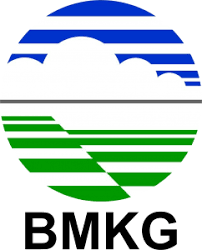
🌦️ BMKG — Badan Meteorologi, Klimatologi, dan Geofisika
- Forecaster cuaca & peringatan dini
- Analis iklim (ENSO, IOD, musim, anomali)
- Peneliti meteorologi & klimatologi
- Teknisi instrumentasi (Radar, AWS, satelit)
- Observer cuaca di stasiun BMKG
BRIN — Penelitian Atmosfer & Iklim
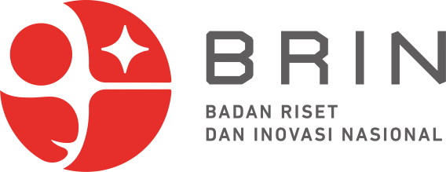
🔬 BRIN — Penelitian Atmosfer & Iklim
- Peneliti atmosfer & cuaca tropis
- Peneliti pemodelan iklim (WRF, RegCM)
- Analis kualitas udara & polusi
- Peneliti energi terbarukan (angin & radiasi surya)
ESDM — Energi & Hidrometeorologi
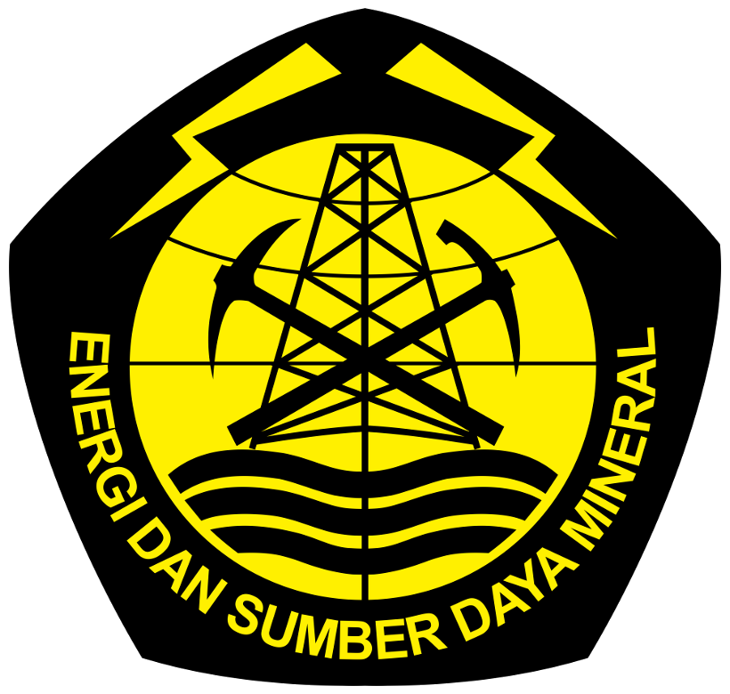
⚡ ESDM — Energi & Hidrometeorologi
- Analis potensi energi terbarukan (angin, surya, hidro)
- Konsultan transisi energi
- Pengembang sistem hidrometeorologi untuk energi
BNPB — Kebencanaan Hidrometeorologi
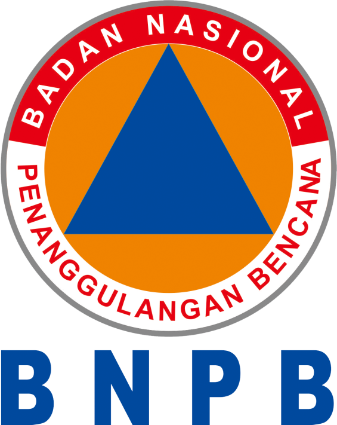
🚨 BNPB — Kebencanaan Hidrometeorologi
- Analis risiko banjir, kekeringan, badai
- Spesialis data kebencanaan
- Perancang sistem peringatan dini
- Konsultan risiko iklim
IPCC — Climate Science & Global Research
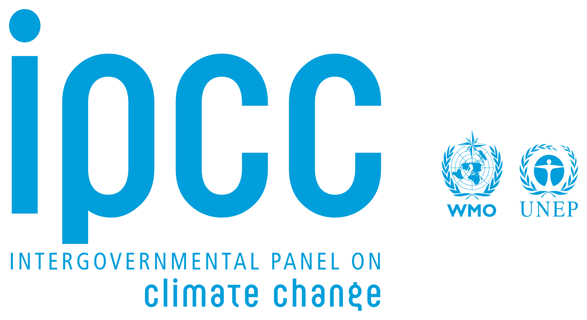
🌍 IPCC — Climate Science & Global Research
- Peneliti iklim global
- Kontributor laporan IPCC
- Ahli mitigasi & adaptasi perubahan iklim
KLHK — Lingkungan & Kebijakan Iklim
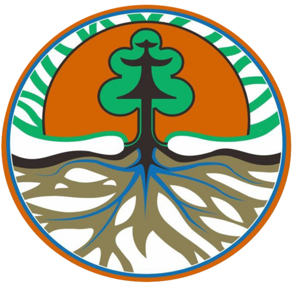
🌱 KLHK — Lingkungan & Kebijakan Iklim
- Analis inventarisasi gas rumah kaca
- Analis polusi udara
- Perancang kebijakan iklim nasional
- Staf pengolah data meteorologi–lingkungan
Nafas Indonesia — Environmental Technology
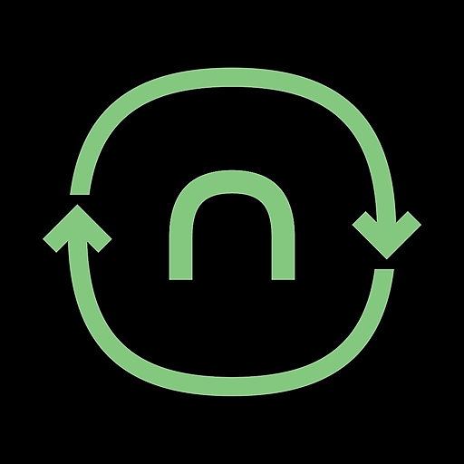
🌬️ Nafas Indonesia — Environmental Technology
- Analis kualitas udara
- Data scientist atmosfer & spasial
- Machine learning untuk polusi & cuaca
Pertamina — Weather & Energy Risk
🔥 Pertamina — Weather & Energy Risk
- Analis risiko cuaca untuk energi & migas
- Spesialis sustainability & climate risk
- Analisis cuaca ekstrem untuk operasional
Maipark — Reasuransi Bencana
🏢 Maipark — Reasuransi Bencana
- Analis risiko hidrometeorologi
- Modeler kerugian akibat cuaca ekstrem
- Peneliti indeks risiko bencana
Manvis — Sistem Instrumen & Sensor
📡 Manvis — Sistem Instrumen & Sensor
- Teknisi sistem observasi cuaca
- Spesialis radar & sensor atmosfer
- Konsultan instrumentasi meteorologi
MNI — Meteo Nusantara Instrumen
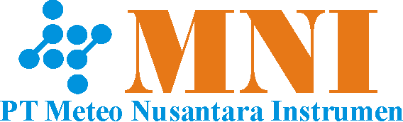
🛰️ MNI — Meteo Nusantara Instrumen
- Pengembang instrumen meteorologi
- Teknisi radar, AWS, dan sensor atmosfer
- Programmer sistem observasi cuaca
- Machine learning engineer data cuaca
PUPR – Direktorat Sumber Daya Air
💧 PUPR – Direktorat Sumber Daya Air
Mengelola risiko hidrometeorologi, bendungan, sungai, dan sistem tata air.
- Ahli cuaca untuk perencanaan bendungan
- Analis hujan ekstrem
- Model hidrologi berbasis cuaca
- Dukungan early warning banjir
BPBD — Badan Penanggulangan Bencana Daerah
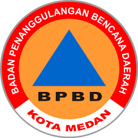
🏘️ BPBD – Badan Penanggulangan Bencana Daerah
Unit mitigasi bencana daerah tingkat provinsi/kabupaten.
- Forecaster lokal
- Analis risiko banjir & longsor
- Pengelola sistem early warning berbasis cuaca
BRIN – Pusat Sains Antariksa (Eks LAPAN)
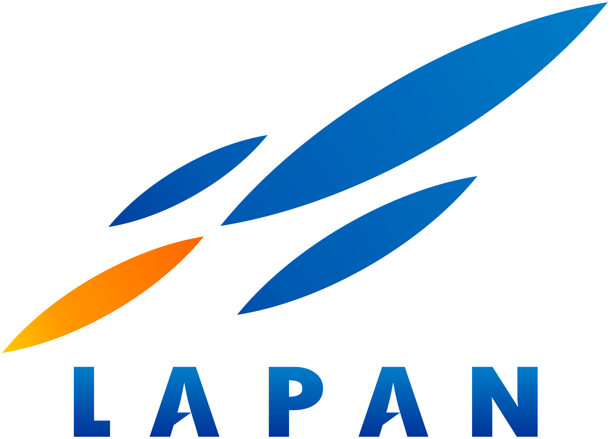
🛰️ BRIN – Pusat Sains Antariksa (Eks LAPAN)
Fokus satelit cuaca, remote sensing, dan riset atmosfer atas.
- Analis data satelit
- Peneliti dinamika atmosfer
- Pengembang model atmosfer & aerosol
- Pengolah citra (MODIS, Himawari, Sentinel)
AirNav Indonesia – Navigasi Penerbangan
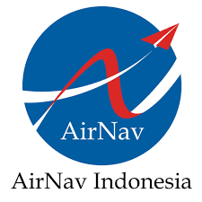
✈️ AirNav Indonesia – Navigasi Penerbangan
Menyediakan layanan navigasi penerbangan, sangat bergantung pada cuaca.
- Aviation Meteorologist
- Analis cuaca untuk rute penerbangan
- Konsultan turbulensi & wind shear
- Dukungan ATC berbasis info cuaca real-time
Maskapai Penerbangan

🛫 Maskapai Penerbangan
Cuaca mempengaruhi keselamatan, rute, dan perencanaan bahan bakar.
- Aviation Forecaster
- Meteorological Flight Officer
- Operational Weather Support
Perusahaan Energi (PLN, Pertamina, Geothermal)

⚡ Perusahaan Energi
Cuaca mempengaruhi energi terbarukan, rig migas, dan pembangkit.
- Wind & Solar Energy Analyst
- Marine/Offshore Weather Specialist
- Risk Analyst cuaca ekstrem
Startup Teknologi & Data
📱 Startup Teknologi & Data
Menggunakan cuaca untuk optimasi logistik & prediksi permintaan.
- Data Scientist bidang cuaca
- Meteorological Data Engineer
- Weather-based Demand Forecasting
Media & Penyiaran
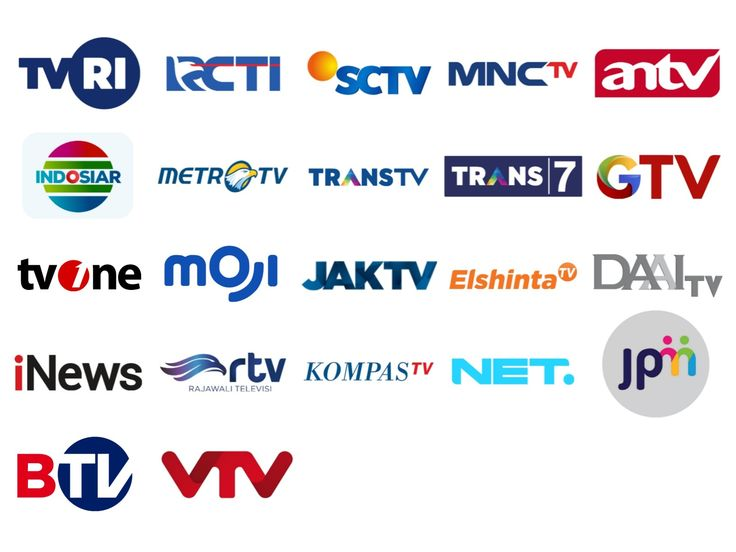
📺 Media & Penyiaran
Menyampaikan info cuaca ke publik.
- Penyiar/Presenter Cuaca
- Penulis naskah info cuaca
- Visualisasi data cuaca
Konsultan Cuaca & Klimatologi Swasta
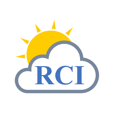
🏢 Konsultan Cuaca & Klimatologi Swasta
Layanan cuaca untuk konstruksi, pelayaran, event, asuransi, dan industri besar.
- Forecaster event outdoor
- Konsultan risiko banjir & cuaca ekstrem
- Penyedia prediksi musim